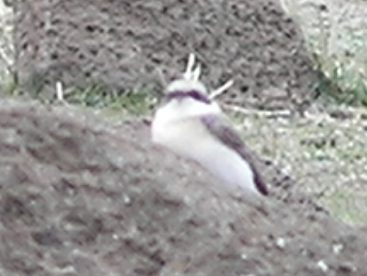
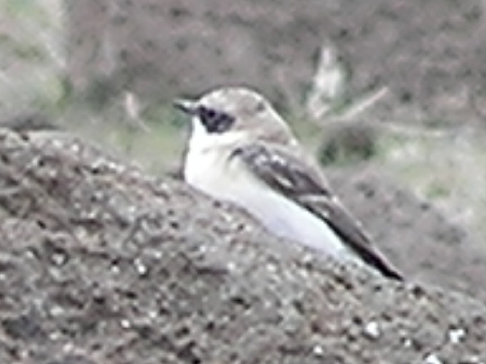

15cm
|  |  |
These pictures are of the male in breeding plumage. It can be difficult to distinguish the females and non-breeding males from Isabelline Wheatears. The Isabelline Wheatear is slightly larger. The easiest way to distinguish them is by the tail, which forms a black 'T' pattern with a broad black bar across the tip of the tail and black central feathers, where the rest of the tail is white.